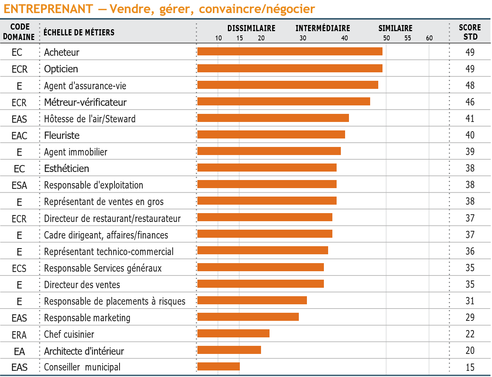
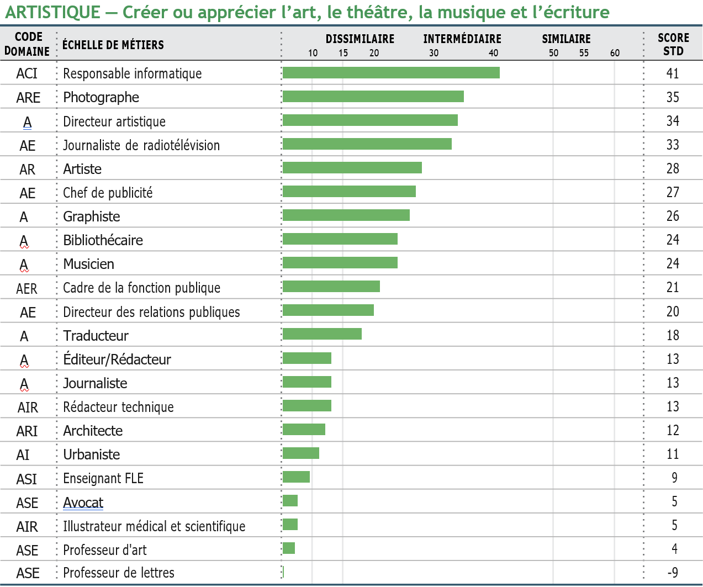
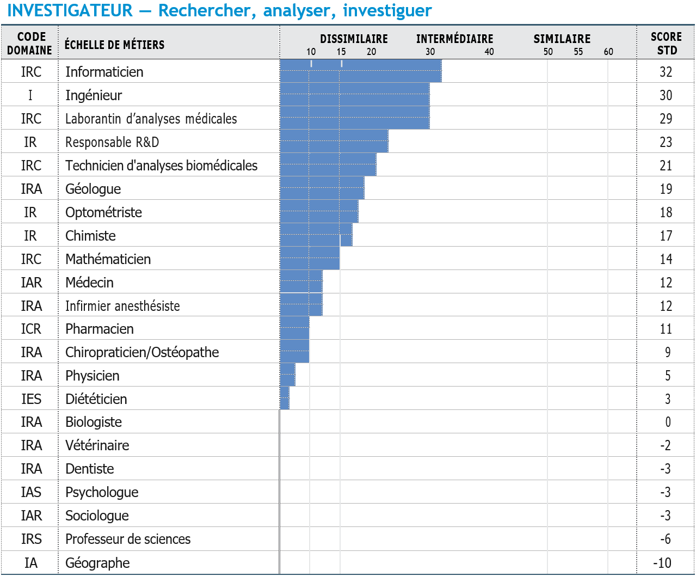
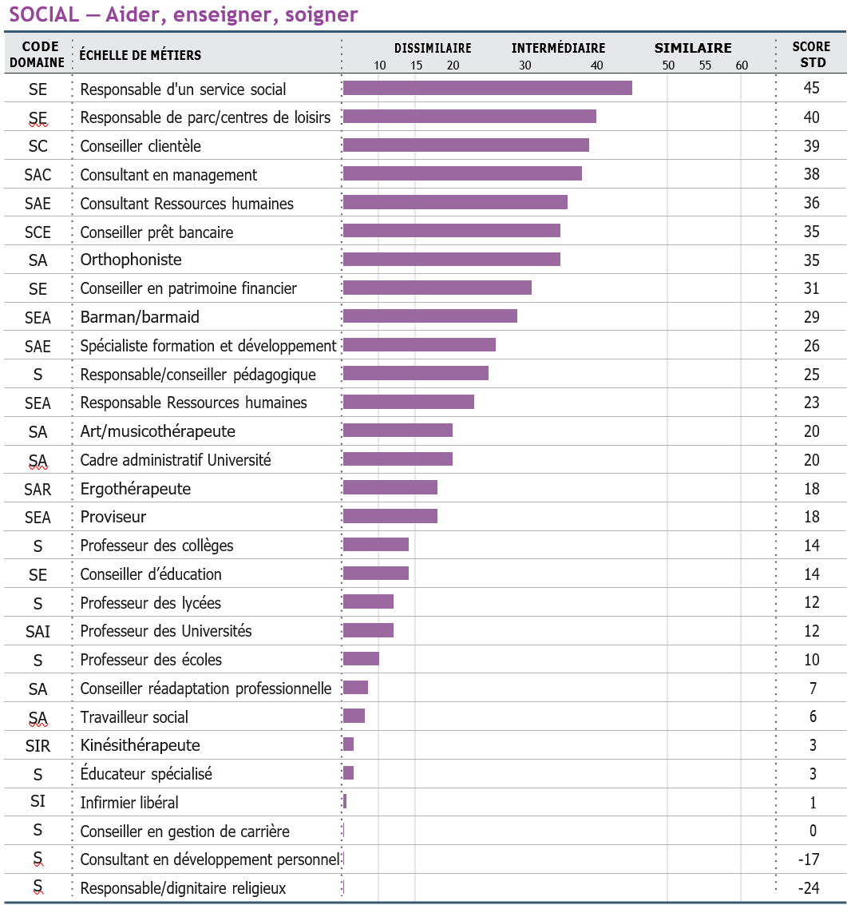
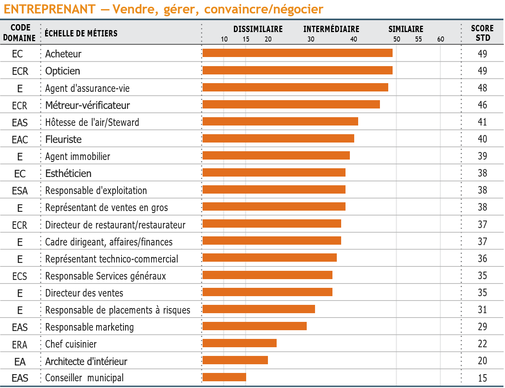
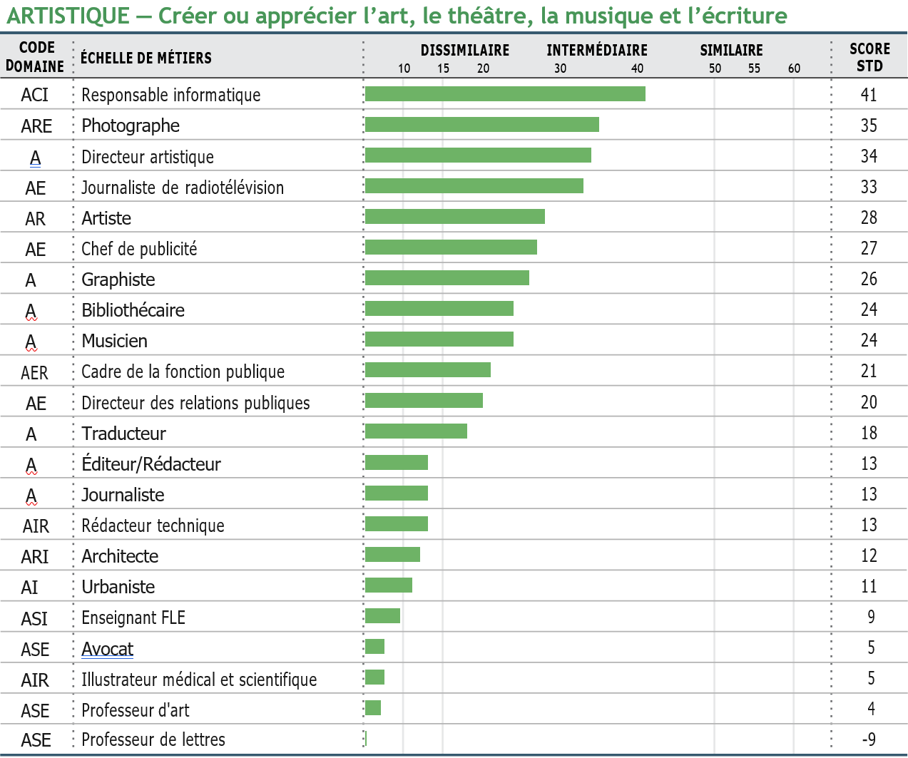
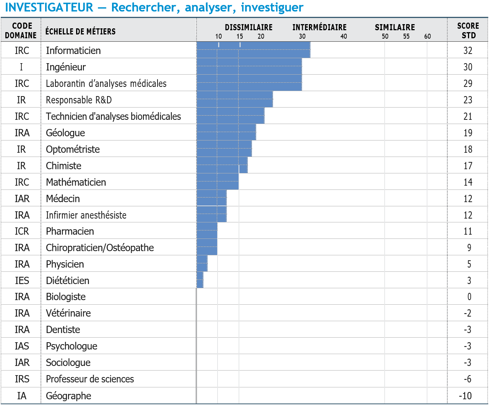
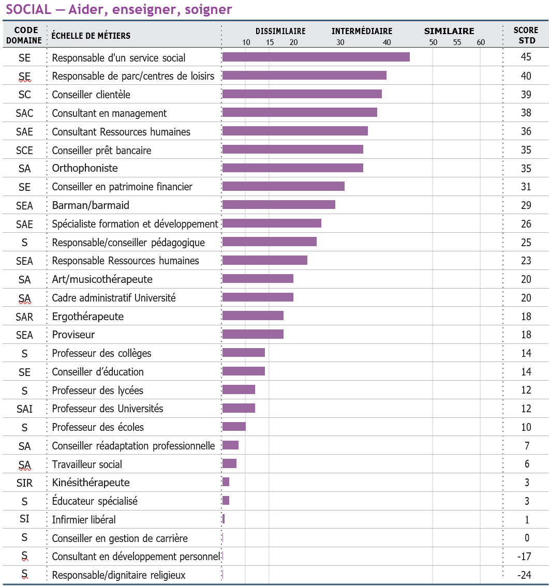

Section 3 : Echelles de métiers
Cette section déroule les résultats de votre profil selon les échelles de métiers du Strong. Les pages suivantes présentent vos scores pour 130 métiers. Les 10 métiers les plus en adéquation avec vos intérêts sont énumérés dans la liste récapitulative ci-dessous. N’oubliez pas que les résultats de votre profil ne font ressortir que quelques-uns des nombreux métiers présentant des liens avec vos intérêts, et que vous pourriez prendre en considération. Ils n’indiquent pas que vous « devriez » choisir ces métiers. Il faut plutôt considérer chacun d’entre eux comme un exemple d’un ensemble de métiers plus large à explorer.
Le score obtenu sur une Échelle de métiers indique le degré de similarité entre vos intérêts et ceux de personnes de même sexe, exerçant le métier en question et qui en sont satisfaites. Plus votre score est élevé, plus ce que vous appréciez ou pas dans le métier est partagé par ces personnes. Les codes de domaines associés à chaque métier indiquent les DPG les plus fréquents parmi les personnes qui exercent ce métier. Vous pouvez examiner les métiers pour lesquels vous avez obtenu les scores élevés en relevant les codes de domaines récurrents, pour explorer ensuite d’autres métiers ne faisant pas partie du Strong mais ayant une ou plusieurs lettres du code de domaine en commun.
Métiers éloignés de vos intérêts
- Responsable/dignitaire religieux (S)
- Consultant en développement personnel (S)
- Géographe (IA)
- Professeur de lettres (ASE)
- Professeur de sciences (IRS)
En examinant vos résultats dans les pages qui suivent, notez les noms des métiers pour lesquels vous avez obtenu un résultat « Similaire ». Ce sont les métiers à explorer en premier. Pensez également à prendre en considération les métiers où vous avez obtenu un résultat intermédiaire. Ce dernier indique que certains éléments de vos réponses correspondent aux aspects du métier appréciés ou pas par des personnes qui les exercent. Vous pouvez également prendre en compte les métiers le moins en adéquation avec vos intérêts, pour lesquels votre résultat est « Dissimilaire » ; cependant, vous aurez probablement peu d’intérêts en commun avec ceux qui exercent ces métiers, et votre pratique de ces derniers peut s’avérer quelque peu atypique. Votre consultant peut vous guider dans votre exploration.
Les noms des professions sont donnés au masculin mais cela ne préjuge en rien du fait que cette profession puisse être exercée par un homme ou par une femme.
Pour plus d’informations sur les métiers, vous pouvez consulter le répertoire des métiers ROME sur le site de Pôle Emploi. Vous pouvez également trouver des informations sur les métiers dans une bibliothèque publique, dans les services d’orientation proches de votre domicile (CIO) ou dans votre université (SCUIO), dans les agences de Pôle Emploi ou dans les centres de bilan de compétences. Complétez ces informations en interrogeant les personnes qui exercent les métiers qui vous intéressent. Elles peuvent vous expliquer en quoi consiste leur travail au jour le jour et dire ce qu’elles aiment ou pas dans leur métier.
Résultats similaires (40 et plus)
Vous partagez des intérêts avec des femmes qui exercent ce métier, et il est probable que ce travail vous plairait.
Résultats intermédiaires (30–39)
Vous partagez quelques intérêts avec des femmes qui exercent ce métier, et vous apprécieriez probablement certains aspects de ce travail.
Résultats dissimilaires (29 et moins)
Vous partagez peu d’intérêts avec des femmes qui exercent ce métier, et il est probable que ce travail ne vous plairait pas.
 







Pour plus d’informations sur les métiers, vous pouvez consulter le répertoire des métiers ROME sur le site de Pôle Emploi.